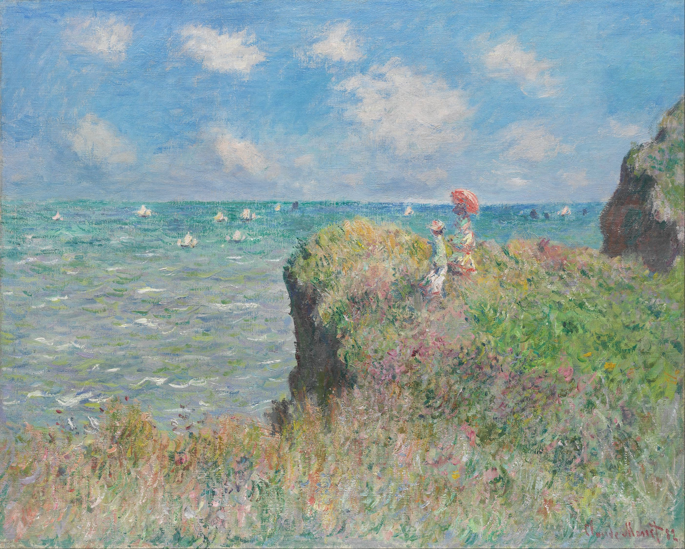

1840 - 1926 / FRANCE
Claude
Monet
ON LOOKING
01 - 03
A landscape is never
one colour.
Blue finds its way into a shadow. Pink settles on a field. A patch of sky rests on water.
Across these three paintings, the place changes. So does the distance from which we look.
02 / 1890 - 91
THE FIELD
The colour of a shadow.
Stacks of Wheat
(End of Summer)
1890 - 91 / OIL ON CANVAS
The stacks are solid. Their colour is less certain: rose on one side, violet on another, a trace of green where the field meets the sky.
03 / 1906
THE WATER
The sky,
without
a horizon.
A lily sits on the surface. A cloud seems to sit beneath it. The pond holds both, and the brush marks keep the water moving.
Water Lilies
1906 / OIL ON CANVAS
A SECOND LOOK
Light leaves
nothing still.
A coastline, two stacks, a pond. The shapes remain.
The colour asks us to look again.
COLLECTION & IMAGE CREDITS
The paintings.
Claude Monet. Art Institute of Chicago collection.
An independent essay; looking notes are interpretations.
01 / Cliff Walk at Pourville
1882. Oil on canvas. 66.5 x 82.3 cm.
Mr. and Mrs. Lewis Larned Coburn Memorial Collection.
02 / Stacks of Wheat (End of Summer)
1890 - 91. Oil on canvas. 60 x 100.5 cm.
Gift of Arthur M. Wood, Sr. in memory of Pauline Palmer Wood.
03 / Water Lilies
1906. Oil on canvas. 89.9 x 94.1 cm.
Mr. and Mrs. Martin A. Ryerson Collection.